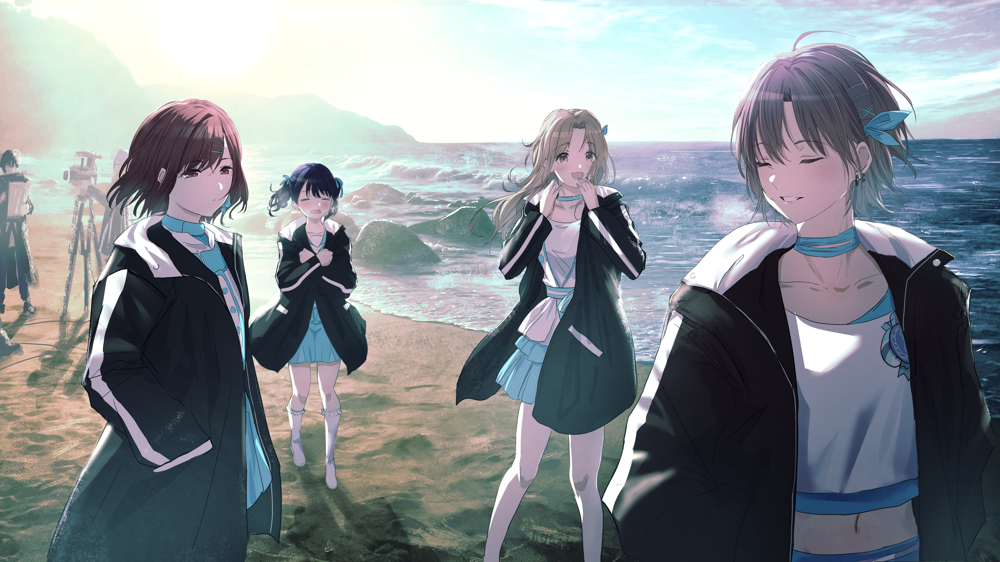
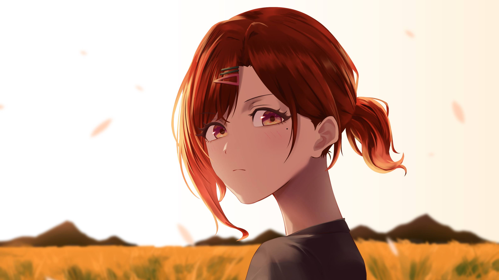
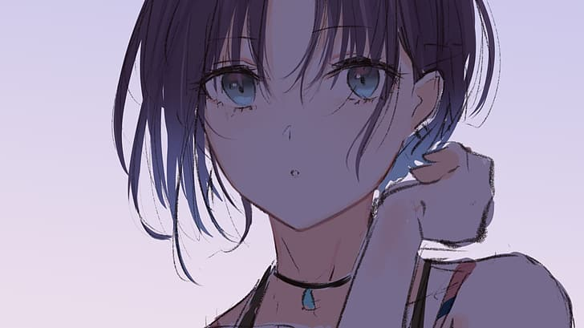
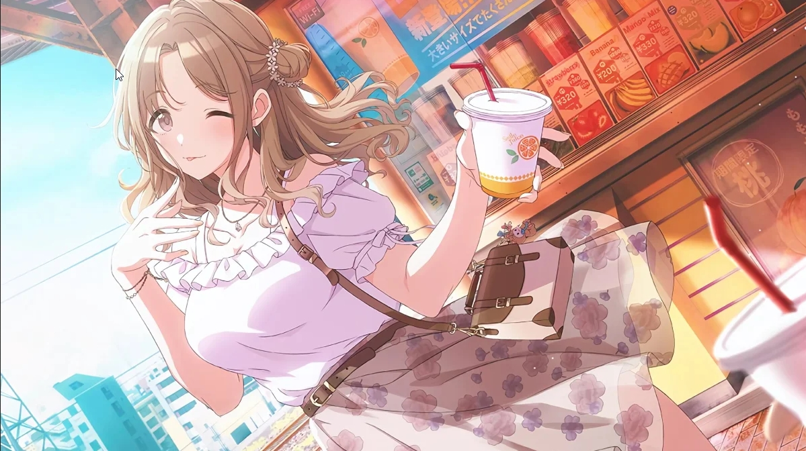
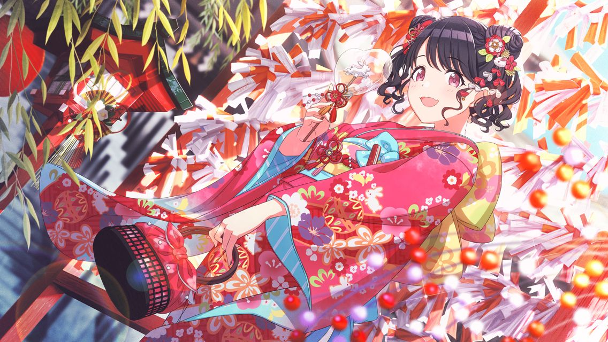

About Noctchill

noctchill is one of the units appearing in Shiny Colors, consisting of Toru Asakura, Madoka Higuchi,
Koito Fukumaru, and Hinana Ichikawa.
An idol unit full of transparency, formed by four childhood friends.They d on't have to be anyone else──
These girls become a blue breeze chasing the running waves.
Higuchi Madoka

Higuchi Madoka is one of the idols that can be produced in THE IDOLM@STER Shiny Colors. She is voiced
by Rio Tsuchiya. She is part of the quartet unit noctchill.
Character Description
A cool and cynical girl in her 2nd year of high school. Her traits include her cool eyes and a
mole under her left eye. She has a cold attitude towards the Producer.
Madoka is extremely honest, and doesn't mince words ── when she hates something, she doesn't
hide her hatred, but when she's happy she doesn't hide her happiness. She openly dislikes the
Producer and his enthusiastic, idealistic personality, but despite not having a lot of
motivation towards becoming an idol she works extremely seriously towards that goal and often
practices in secret (though she hates when the Producer finds that out). She may have a rude
and outright mean personality, but she has a soft heart. For example, she can't be entirely
happy when she passes an audition, because her win means that many other girls lost.
After her childhood friend Toru was suddenly scouted to work as an idol, Madoka immediately grew
suspicious and went to 283 Production. She lied and said she wanted to be an idol to see if the
office was legitimate. Though she was initially disgusted when the Producer scouted her, she
reluctantly agreed just to make sure Toru was safe.
Trivia
- When she was younger, she was much more timid.
- She hates bugs, to the point she can barely keep her cool personality around them.
- She shares the same birthday with Fumika Sagisawa.
Toru Asakura

Toru Asakura is one of the idols that can be produced in THE IDOLM@STER Shiny Colors. She is voiced by
Yuu Wakui. She is part of the quartet unit noctchill.
Character Description
A girl who doesn't put on appearances. Not worrying about how others see her, she is calm and
goes at her own pace. However, she has an aura that attracts everyone in her overflowingly
transparent appearance. She is in her 2nd year of high school.
She has a serious and honest personality, but she also is rather easygoing and follows her
whims. Toru isn't necessarily dishonest, but she doesn't like expressing strong feelings or
showing her true self. Therefore, it's hard to tell what she's thinking.
She was scouted by the Producer while he waited for a bus. At first, she turned him down
harshly, but suddenly changed her mind. It's later revealed in her story that, although the
Producer doesn't remember, they met at that same bus stop when she was a child and he was a
college student. They killed time at a local park while waiting for the same bus, and the
Producer encouraged Toru to keep climbing the jungle gym when she thought she couldn't. This
memory stuck in her mind, and made a deep impression on her. However, because Toru was often
mistaken for a boy when she was younger, the Producer doesn't recognize her at all, though he
does remember that day.
Trivia
- Toru is surprisingly airheaded, despite her mature appearance. Doing things like
forgetting her wallet when trying to treat her friends to conbini (convenience store)
food.
- The phrase "I forgot my wallet" (財布ないわ saifu nai wa) eventually became associated
with her.
- ecause she randomly mentions mammoths in a home screen line and elsewhere, she is often
associated with the phrase "mammoth-kun" by fans.
Hinana Ichikawa

Hinana Ichikawa is one of the idols that can be produced in THE IDOLM@STER Shiny Colors. She is voiced
by Miho Okasaki. She is part of the quartet unit noctchill.
Character Description
An unbridled girl who rushes towards her "happiness". She adores her childhood friend and senior
Toru. She is in her 1st year of high school.
Hinana first and foremost cares about always being happy, no matter who it may bother. She doesn't
like having to try too hard in life, reasoning that it wouldn't fun. She loves to be praised and
complimented, to the point of asking for it and pouting when she's denied.
Trivia
- Hinana's catchphrases are her "Aha~" and "Yaha~".
- The mascot character on her uniform's cardigan that features in her P-SSR2 card is called
Yuakuma. Hinana has been a fan of it for many years, even before it became widely popular,
and collects merchandise of it.
- She loves sweets and strawberries.
Koito Fukumaru

Koito Fukumaru is one of the idols that can be produced in THE IDOLM@STER Shiny Colors. She is voiced
by Saran Tajima. She is part of the quartet unit noctchill.
Character Description
A girl who is reminiscent of a small animal: bold at home, meek elsewhere. She is a diligent hard
worker and is good at studying. She gets easily tricked and often gets teased by her childhood
friends. She is in her 1st year of high school.
Despite being easily startled and tiny, Koito is a hardworker who sees herself as the mature friend
who holds their group together. Ever since she was small, her strict parents pressured her to be an
honor student, so she didn't get to experience a lot of her childhood (for example, she says in her
S-SSR1 card that she's never been to a Halloween party before). She often tries to act boastful or
bold, but her true, more timid and childish nature always shines through. However, even though she
tries to act responsible, she often feels self-conscious about how much harder she has to work at
becoming an idol than everyone else.
- Koito's parents are very strict and want her to focus strictly on academic success. She
initially kept becoming an idol a secret from them.
- She is one of the few people Madoka will act softly towards, and will often give candy as a gift.
- Her given name, Koito means small thread. Two kanjis in her name; 小 (ko) and 糸 (ito) mean
small and thread respectively.
- She often says "pya/pyeh/pi" when startled.
- She is notably the last member of the quartet to join noctchill.